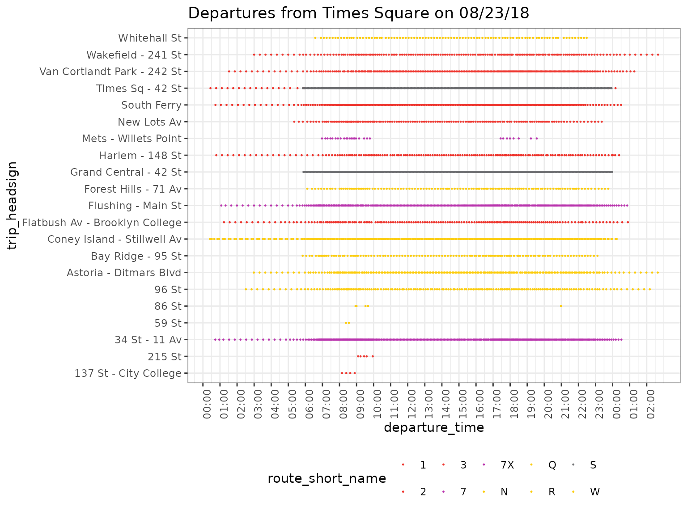
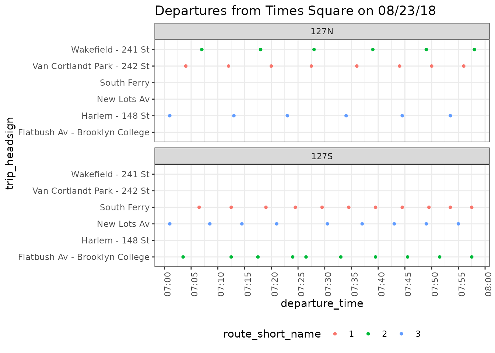

In this vignette a departure timetable for a stop is generated and visualised. For some analysis it is important to know how and when a single stop is served and workflows to gather and plot such data can help with this analysis.
We use a feed from the New York Metropolitan Transportation Authority. It is provided as a sample feed with tidytransit but you can read it directly from the MTA’s website.
local_gtfs_path <- system.file("extdata", "google_transit_nyc_subway.zip", package = "tidytransit")
gtfs <- read_gtfs(local_gtfs_path)
# gtfs <- read_gtfs("http://web.mta.info/developers/data/nyct/subway/google_transit.zip")To display where a bus (or any public transit vehicle) is headed on a timetable we need the column trip_headsign in gtfs$trips. This is an optional field but our example feed provides this information. To display where a vehicle comes from on the timetable we need to create a new column in gtfs$trips which we’ll call trip_origin.
# get the id of the first stop in the trip's stop sequence
first_stop_id <- gtfs$stop_times %>%
group_by(trip_id) %>%
summarise(stop_id = stop_id[which.min(stop_sequence)])
# join with the stops table to get the stop_name
first_stop_names <- left_join(first_stop_id, gtfs$stops, by="stop_id")
# rename the first stop_name as trip_origin
trip_origins <- first_stop_names %>% select(trip_id, trip_origin = stop_name)
# join the trip origins back onto the trips
gtfs$trips <- left_join(gtfs$trips, trip_origins, by = "trip_id")## # A tibble: 6 × 2
## route_id trip_origin
## <chr> <chr>
## 1 1 Van Cortlandt Park - 242 St
## 2 1 Van Cortlandt Park - 242 St
## 3 1 Van Cortlandt Park - 242 St
## 4 1 Van Cortlandt Park - 242 St
## 5 1 South Ferry
## 6 1 Van Cortlandt Park - 242 StIn case trip_headsign does not exist in the feed it can be generated similarly to trip_origin:
if(!exists("trip_headsign", where = gtfs$trips)) {
# get the last id of the trip's stop sequence
trip_headsigns <- gtfs$stop_times %>%
group_by(trip_id) %>%
summarise(stop_id = stop_id[which.max(stop_sequence)]) %>%
left_join(gtfs$stops, by="stop_id") %>% select(trip_id, trip_headsign.computed = stop_name)
# assign the headsign to the gtfs object
gtfs$trips <- left_join(gtfs$trips, trip_headsigns, by = "trip_id")
}To create a departure timetable we first need to find the ids of all stops in the stops table with the same same name, as stop_name might cover different platforms and thus have multiple stop_ids in the stops table.
To the selected stop_ids for Time Square, we can join trip columns: route_id, service_id, trip_headsign, and trip_origin. Because stop_ids and trips are linked via the stop_times data frame, we do this by joining the stop_ids we’ve selected to the stop_times data frame and then to the trips data frame.
Each trip belongs to a route, and the route short name can be added to the departures by joining the trips data frame with gtfs$routes.
departures <- departures %>%
left_join(gtfs$routes %>%
select(route_id,
route_short_name),
by = "route_id")Now we have a data frame that tells us about the origin, destination, and time at which each train depart from Times Square for every possible schedule of service.
departures %>%
select(arrival_time,
departure_time,
trip_headsign,trip_origin,
route_id) %>%
head() %>%
knitr::kable()| arrival_time | departure_time | trip_headsign | trip_origin | route_id |
|---|---|---|---|---|
| 01:29:30 | 01:29:30 | Van Cortlandt Park - 242 St | South Ferry | 1 |
| 01:49:30 | 01:49:30 | Van Cortlandt Park - 242 St | South Ferry | 1 |
| 02:09:30 | 02:09:30 | Van Cortlandt Park - 242 St | South Ferry | 1 |
| 02:29:30 | 02:29:30 | Van Cortlandt Park - 242 St | South Ferry | 1 |
| 02:49:30 | 02:49:30 | Van Cortlandt Park - 242 St | South Ferry | 1 |
| 03:09:30 | 03:09:30 | Van Cortlandt Park - 242 St | South Ferry | 1 |
However, we don’t know days on which these trips run. Using the service_id column on our calculated departures, and tidytransit’s calculated dates_services data frame, we can filter trips to a given date of interest.
head(gtfs$.$dates_services)## # A tibble: 6 × 2
## date service_id
## <date> <chr>
## 1 2018-06-24 ASP18GEN-1037-Sunday-00
## 2 2018-06-24 ASP18GEN-2048-Sunday-00
## 3 2018-06-24 ASP18GEN-3041-Sunday-00
## 4 2018-06-24 ASP18GEN-4049-Sunday-00
## 5 2018-06-24 ASP18GEN-5048-Sunday-00
## 6 2018-06-24 ASP18GEN-6030-Sunday-00Please see the servicepatterns vignette for further examples on how to use this table.
Now we are ready to extract the same service table for any given day of the year.
For example, for August 23rd 2018, a typical weekday, we can filter as follows:
services_on_180823 <- gtfs$.$dates_services %>%
filter(date == "2018-08-23") %>% select(service_id)
departures_180823 <- departures %>%
inner_join(services_on_180823, by = "service_id")How services and trips are set up depends largely on the feed. For an idea how to handle other dates and questions about schedules have a look at the servicepatterns vignette.
departures_180823 %>%
arrange(departure_time, stop_id, route_short_name) %>%
select(departure_time, stop_id, route_short_name, trip_headsign) %>%
filter(departure_time >= hms::hms(hours = 7)) %>%
filter(departure_time < hms::hms(hours = 7, minutes = 10)) %>%
knitr::kable()| departure_time | stop_id | route_short_name | trip_headsign |
|---|---|---|---|
| 07:00:00 | 725S | 7X | 34 St - 11 Av |
| 07:00:30 | 902N | S | Times Sq - 42 St |
| 07:01:00 | 127N | 3 | Harlem - 148 St |
| 07:01:00 | 127S | 3 | New Lots Av |
| 07:01:00 | 725N | 7 | Flushing - Main St |
| 07:01:30 | R16N | Q | 96 St |
| 07:02:00 | R16S | R | Bay Ridge - 95 St |
| 07:02:30 | 725S | 7 | 34 St - 11 Av |
| 07:02:30 | 902S | S | Grand Central - 42 St |
| 07:03:00 | 725N | 7 | Flushing - Main St |
| 07:03:30 | 127S | 2 | Flatbush Av - Brooklyn College |
| 07:04:00 | 127N | 1 | Van Cortlandt Park - 242 St |
| 07:04:00 | R16S | Q | Coney Island - Stillwell Av |
| 07:04:30 | 902N | S | Times Sq - 42 St |
| 07:05:00 | 725S | 7X | 34 St - 11 Av |
| 07:05:00 | R16S | W | Whitehall St |
| 07:05:30 | 725N | 7 | Flushing - Main St |
| 07:06:00 | R16N | R | Forest Hills - 71 Av |
| 07:06:30 | 127S | 1 | South Ferry |
| 07:06:30 | 902S | S | Grand Central - 42 St |
| 07:07:00 | 127N | 2 | Wakefield - 241 St |
| 07:07:00 | R16S | R | Bay Ridge - 95 St |
| 07:07:30 | 725S | 7 | 34 St - 11 Av |
| 07:08:00 | 725N | 7 | Flushing - Main St |
| 07:08:00 | R16N | N | Astoria - Ditmars Blvd |
| 07:08:30 | 127S | 3 | New Lots Av |
| 07:08:30 | 902N | S | Times Sq - 42 St |
| 07:09:00 | R16S | N | Coney Island - Stillwell Av |
We’ll now plot all departures from Times Square depending on trip_headsign and route. We can use the route colors provided in the feed.
route_colors <- gtfs$routes %>% select(route_id, route_short_name, route_color)
route_colors$route_color[which(route_colors$route_color == "")] <- "454545"
route_colors <- setNames(paste0("#", route_colors$route_color), route_colors$route_short_name)
ggplot(departures_180823) + theme_bw() +
geom_point(aes(y=trip_headsign, x=departure_time, color = route_short_name), size = 0.2) +
scale_x_time(breaks = seq(0, max(as.numeric(departures$departure_time)), 3600),
labels = scales::time_format("%H:%M")) +
theme(axis.text.x = element_text(angle = 90, hjust = 1)) +
theme(legend.position = "bottom") +
scale_color_manual(values = route_colors) +
labs(title = "Departures from Times Square on 08/23/18")
Now we plot departures for all stop_ids with the same name, we can separate for different stop_id. The following plot shows all departures for stop_ids 127N and 127S from 7 to 8 AM.
departures_180823_sub_7to8 <- departures_180823 %>%
filter(stop_id %in% c("127N", "127S")) %>%
filter(departure_time >= hms::hms(hours = 7) & departure_time <= hms::hms(hour = 8))
ggplot(departures_180823_sub_7to8) + theme_bw() +
geom_point(aes(y=trip_headsign, x=departure_time, color = route_short_name), size = 1) +
scale_x_time(breaks = seq(7*3600, 9*3600, 300), labels = scales::time_format("%H:%M")) +
scale_y_discrete(drop = F) +
theme(axis.text.x = element_text(angle = 90, hjust = 1)) +
theme(legend.position = "bottom") +
labs(title = "Departures from Times Square on 08/23/18") +
facet_wrap(~stop_id, ncol = 1)
Of course this plot idea can be expanded further. You could also differentiate each route by direction (using headsign, origin or next/previous stops). Another approach is to calculate frequencies and show different levels of service during the day, all depending on the goal of your analysis.